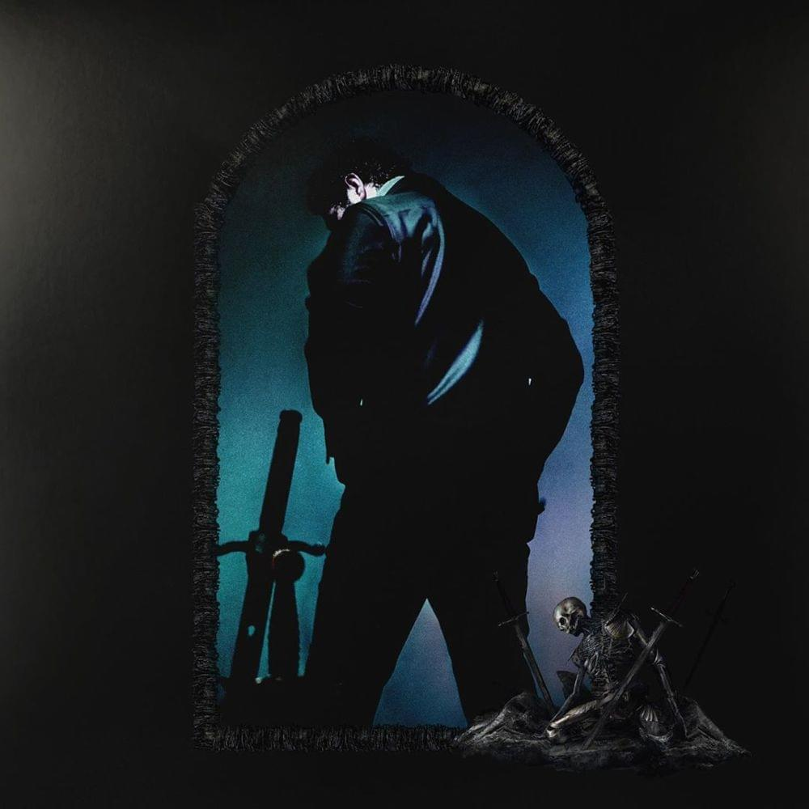

track list
01. Hollywood's Bleeding
02. Saint-Tropez
03. Enemies (Ft. DaBaby)
04. Allergic
05. A Thousand Bad Times
06. Circles
07. Die For Me (Ft. Future & Halsey)
08. On the Road (Ft. Lil Baby & Meek Mill)
09. Take What You Want
Ft. Ozzy Osbourne & Travis Scott
10. I'm Gonna Be
11. Staring at the Sun (Ft. SZA)
12. Sunflower by Post Malone & Swae Lee
13. Internet
14. Goodbyes (Ft. Young Thug)
15. Myself
16. I Know
17. Wow.
